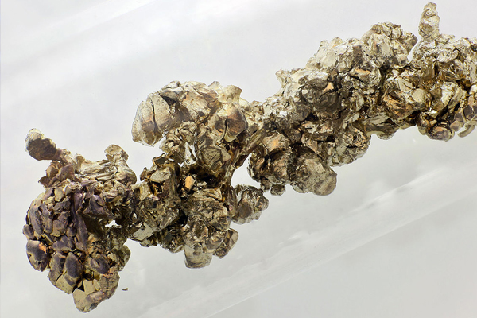
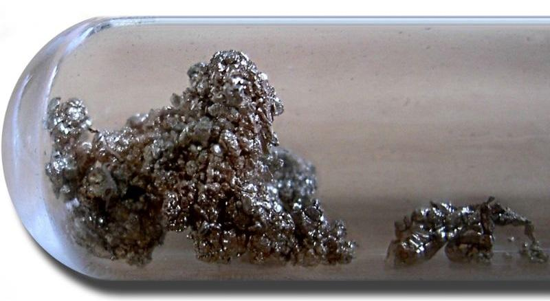

Стронций
Стро́нций (химический символ — Sr, от лат. Strontium) — химический элемент 2-й группы (по устаревшей классификации — главной подгруппы второй группы, IIA) пятого периода периодической системы химических элементов Д. И. Менделеева с атомным номером 38.Простое вещество стронций — это мягкий, ковкий и пластичный щёлочноземельный металл серебристо-белого цвета. Обладает высокой химической активностью, на воздухе быстро реагирует с влагой и кислородом, покрываясь жёлтой оксидной
Новый элемент обнаружили в минерале стронцианите, найденном в 1764 году в свинцовом руднике близ шотландской деревни Стронти́ан (англ. Strontian, гэльск. Sròn an t-Sìthein), давшей впоследствии название новому элементу. Присутствие в этом минерале оксида нового металла было установлено в 1787 году Уильямом Крюйкшенком и Адером Крофордом. Выделен в чистом виде сэром Хемфри Дэви в 1808 году.

Стронций получают электролизом расплава SrCl2, металлотермическим восстановлением SrO или SrCl2 с помощью Al, Si или ферросилиция, восстановлением SrCl2 магнием. Используют в качестве легирующих добавок к сплавам Mg, Al, Pb, Ni и Сu, как геттер в электровакуумной технике. Соединения стронция применяют в пиротехнических и фосфоресцирующих составах, в производстве оптических стёкол, ферромагнитных и люминесцентных материалов и т. д. Объём мирового производства соединений стронция около 100 тыс. т/год (2016).

Радиоактивный 90Sr, поступающий в окружающую среду в результате ядерных испытаний и аварий на АЭС, представляет большую опасность, так как длительное время находится в поверхностном слое Земли и обладает высокой миграционнной способностью. 90Sr накапливается в костных тканях и других органах человека и животных, замещая Ca, что приводит к хрупкости костей и другим вредным последствиям.